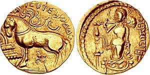

THE GUPTA DYNASTY
The Gupta Empire was an ancient Indian empire, existing from approximately 240 to 590 CE. At its zenith from approximately 319 to 550 CE it covered much of the Indian subcontinent. This period is called the Golden Age of India. The ruling dynasty of the empire was founded by Sri Gupta; the most notable rulers of the dynasty were Chandragupta I, Samudragupta, and Chandragupta II. The 5th-century CE Sanskrit poet Kalidasa credits the Guptas with having conquered about twenty-one kingdoms, both in and outside India, including the kingdoms of Parasikas, the Hunas, the Kambojas, tribes located in the west and east Oxus valleys, the Kinnaras, Kiratas, and others.
The high points of this period are the great cultural developments which took place during the reign of Chandragupta II. All literary sources, such as Mahabharata and Ramayana, were canonised during this period. The Gupta period produced scholars such as Kalidasa, Aryabhata, Varahamihira, Vishnu Sharma and Vatsyayana who made great advancements in many academic fields. Science and political administration reached new heights during the Gupta era. The period gave rise to achievements in architecture, sculpture, and painting that "set standards of form and taste [that] determined the whole subsequent course of art, not only in India but far beyond her borders". Strong trade ties also made the region an important cultural center and established the region as a base that would influence nearby kingdoms and regions in Burma, Sri Lanka, and Southeast Asia. The Puranas, earlier long poems on a variety of subjects, are also thought to have been committed to written texts around this period.

The empire eventually died out because of many factors such as substantial loss of territory and imperial authority caused by their own erstwhile feudatories, as well as the invasion by the Huna peoples (Kidarites and Alchon Huns) from Central Asia. After the collapse of the Gupta Empire in the 6th century, India was again ruled by numerous regional kingdoms. A minor line of the Gupta clan continued to rule Magadha after the disintegration of the empire. These Guptas were ultimately ousted by the Vardhana ruler Harsha, who established his empire in the first half of the 7th century.
Srigupta and Ghatotkacha
The most likely time for the reign of Sri Gupta is c. 240–280. The Murundas, who were feudal lords of Kushans, provided or granted land to Sri Gupta. He can be considered the first person of Gupta's empire, but not the founder of the empire. His son and successor Ghatotkacha ruled presumably from c. 280–319. He challenged other feudal lords and conquered their lands. In contrast to his successor, Chandragupta I, who is mentioned as Maharajadhiraja, he and his son Ghatotkacha are referred to in inscriptions as Maharaja.At the beginning of the 4th century, the Guptas established and ruled a few small Hindu kingdoms in Magadha and around modern-day Bihar.
Yijing also mentioned Sri Gupta in his writings. He was succeeded by his son Ghatotkacha.
Chandragupta I
Ghatotkacha reigned from about 280 CE to 319 CE, and had a son named Chandragupta (reigned c. 320–335 CE) His son is not to be confused with Chandragupta Maurya (322–298 BCE), founder of the Mauryan Empire. In a breakthrough deal, Chandragupta was married to Kumaradevi, a Lichchhavi princess—the main power in Magadha. With a dowry of the kingdom of Magadha (capital Pataliputra) and an alliance with the Licchavis of Nepal, Chandragupta set about expanding his power, conquering much of Magadha, Prayaga, and Saketa. Unlike most other classical empires, Gupta India failed to build fortresses to shore up these vulnerable regions, which led in part to letting them fall out of Guptan hands.He established a realm stretching from the Ganges River to Prayaga (modern-day Allahabad) by 321. He assumed the imperial title of Maharajadhiraja. He expanded his empire through marriage alliances.
Samudragupta
Samudragupta, Parakramanka succeeded his father in 335, and ruled for about 45 years, until his death in 380. He took the kingdoms of Ahichchhatra and Padmavati early in his reign. He then attacked the Malwas, the Yaudheyas, the Arjunayanas, the Maduras and the Abhiras, all of which were tribes in the area. By his death in 380, he had incorporated over twenty kingdoms into his realm and his rule extended from the Himalayas to the river Narmada and from the Brahmaputra to the Yamuna. He gave himself the titles King of Kings and World Monarch. Historian Vincent Smith described him as the "Indian Napoleon".He performed Ashwamedha Yajna in which a horse with an army is sent to all the nearby territories of friends and foes. These territorial kings on arrival either accept the king's alliance, who is performing this Yajna, or fight if they do not. The stone replica of the horse, then prepared, is in the Lucknow Museum. The Samudragupta Prashasti inscribed on the Ashokan Pillar, now in Akbar’s Fort at Allahabad, is an authentic record of his exploits and his sway over most of the continent.
Samudragupta was not only a talented military leader but also a great patron of art and literature. He conquered what is now Kashmir and Afghanistan, enlarging the empire. The critical scholars present in his court were Harishena, Vasubandhu, and Asanga. He was a poet and musician himself. He was a firm believer in Hinduism and is known to have worshipped Lord Vishnu. He was considerate of other religions and allowed Sri Lanka's Buddhist king Sirimeghvanna to build a monastery at Bodh Gaya. That monastery was called by Xuanzang as the Mahabodhi Sangharama. He provided a gold railing around the Bodhi Tree.
Ramagupta
Although, the narrative of the Devichandragupta is not supported by any contemporary epigraphical evidence, the historicity of Rama Gupta is proved by his Durjanpur inscriptions on three Jaina images, where he is mentioned as the Maharajadhiraja. A large number of his copper coins also have been found from the Eran-Vidisha region and classified in five distinct types, which include the Garuda, Garudadhvaja, lion and border legend types. The Brahmi legends on these coins are written in the early Gupta style. In the opinion of art historian Dr. R. A. Agarawala, D. Litt., Rama Gupta may be the eldest son of Samudragupta. He became king because of being the eldest. It is possible that he was dethroned because of being considered unfit to rule, and his younger brother Chandragupta II took over.
Chandragupta II "Vikramaditya"
According to the Gupta records, amongst his sons, Samudragupta nominated prince Chandragupta II, born of queen Dattadevi, as his successor. Chandragupta II, Vikramaditya (the Sun of Power), ruled from 375 until 415. He married a Kadamba princess of Kuntala and of Naga lineage (Nagakulotpannna), Kuberanaga. His daughter Prabhavatigupta from this Naga queen was married to Rudrasena II, the Vakataka ruler of Deccan. His son Kumaragupta I was married to a Kadamba princess of the Karnataka region. Chandragupta II expanded his realm westwards, defeating the Saka Western Kshatrapas of Malwa, Gujarat and Saurashtra in a campaign lasting until 409. His main opponent Rudrasimha III was defeated by 395, and he crushed the Bengal chiefdoms. This extended his control from coast to coast, established a second capital at Ujjain and was the high point of the empire.
Despite the creation of the empire through war, the reign is remembered for its very influential style of Hindu art, literature, culture and science, especially during the reign of Chandragupta II. Some excellent works of Hindu art such as the panels at the Dashavatara Temple in Deogarh serve to illustrate the magnificence of Gupta art. Above all it was the synthesis of elements that gave Gupta art its distinctive flavour. During this period, the Guptas were supportive of thriving Buddhist and Jain cultures as well, and for this reason there is also a long history of non-Hindu Gupta period art. In particular, Gupta period Buddhist art was to be influential in most of East and Southeast Asia. Many advances were recorded by the Chinese scholar and traveller Faxian (Fa-hien) in his diary and published afterwards.
The court of Chandragupta was made even more illustrious by the fact that it was graced by the Navaratna(Nine Jewels), a group of nine who excelled in the literary arts. Amongst these men was the immortal Kalidasa whose works dwarfed the works of many other literary geniuses, not only in his own age but in the years to come. Kalidasa was mainly known for his subtle exploitation of the shringara (romantic) element in his verse.
Chandragupta II's Campaigns against Foreign Tribes
The 4th century Sanskrit poet Kalidasa credits Chandragupta Vikramaditya with conquering about twenty one kingdoms, both in and outside India. After finishing his campaign in East and West India, Vikramaditya (Chandragupta II) proceeded northwards, subjugated the Parasikas, then the Hunas and the Kambojastribes located in the west and east Oxus valleys respectively. Thereafter, the king proceeded into the Himalaya mountains to reduce the mountain tribes of the Kinnaras, Kiratas, as well as India proper.
The Brihatkathamanjari of the Kashmiri writer Kshemendra states, King Vikramaditya (Chandragupta II) had "unburdened the sacred earth of the Barbarians like the Sakas, Mlecchas, Kambojas, Yavanas, Tusharas, Parasikas, Hunas, and others, by annihilating these sinful Mlecchas completely".